Chapter 4 Other Industrial and Commercial Processes
4.1 Large and Small Bakeries
Emissions from these categories are from large commercial bakeries as well as smaller bakeries. Bread is produced either by sponge-dough process, brews (or liquid sponges) process, or straight-dough process. Commercial bakeries more often use the sponge-dough process, where ingredients are initially mixed, bread dough fermented from 3 to 5 hours, and then baked in ovens at about 450 °F. Bakery products such as sweet rolls, crackers, pretzels, cakes, cookies, doughnuts, biscuits, etc. are either leavened by yeast or by baking powder. Yeast metabolizes the sugars and starches in the dough during fermentation process. The end product of this chemical reaction is primarily carbon dioxide and ethanol (TOG).
The major criteria pollutant emitted from bread baking is primarily ethanol, which is a by-product of the leavening process. Emissions of combustion products from the burning of fuel in the ovens stacks are not considered in this category. Carbon dioxide (CO2) is calculated from the combustion of the ethanol from the bread in an abatement device such as an afterburner. The abatement devices are used on the larger (point source) ovens. There is no CO2 emission data from the fermentation process available at this time.
4.1.1 Methodologies
Throughput information from large bakeries are reported and stored in the District’s Data Bank system. Source tests, which are conducted at various times, provide the data for criteria pollutant emission factors. (During the rulemaking process in the late 1980’s, fifteen ovens from six large bakeries in the Bay Area were source tested by the District. Ethanol (TOG) emissions ranged from 0.3 to 7.0 pounds per thousand pounds bread produced, depending on the oven size, operating temperature, and type of product.) As mentioned above, CO2 emissions are estimated from the combustion of ethanol from the bread in an abatement device. Emissions from these larger bakeries are called point sources (Category #28).
There are numerous smaller bakeries in the Bay Area, which are not in the Data Bank system. These bakeries use smaller ovens. Source test results showed an emission factor of 5.4 pounds ethanol per ton of bread produced. Emissions from these smaller bakeries are called area sources (Category #935). Throughput data for small bakeries was based on a survey regarding the large bakeries. Small bakeries showed an approximately 37% share of the total bread market. The 2011 average daily throughput from smaller bakeries was calculated to be about 79,676 tons/year. TOG emissions from small bakeries were 1,179 pounds/day (0.59 ton per day)
Monthly Variation
For large bakeries, monthly distribution was based on each company’s reported quarterly seasonal percent throughput data. For small bakeries (area sources), monthly distribution was based on a 1990 production of a large bakery, which is assumed to be typical.
County Distribution
The county locations and associated emissions of each of the large bakeries were used to distribute countywide emissions. For small bakeries, the number of employees in the large bakeries was subtracted from the total number of employees in each county’s bakeries. This data was found in the U.S Census Department’s 2010 County Business Patterns
4.1.2 Trends
4.1.2.1 History
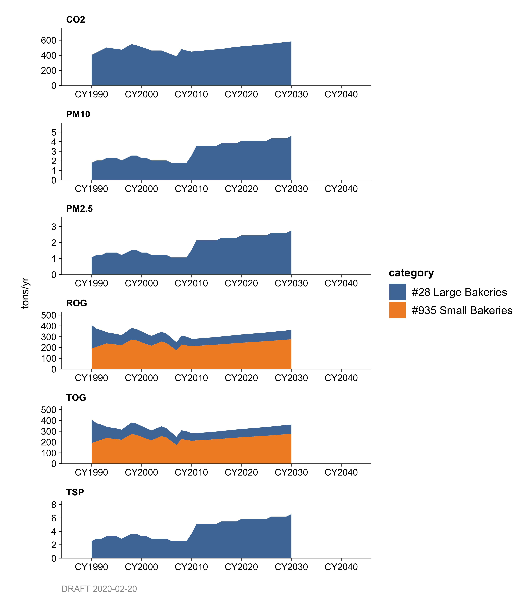
Historical emissions were estimated using actual throughputs and the Association of Bay Area Government’s (ABAG’s) 2009 Manufacturing and Wholesale Employment growth profile. District Regulation 8, Rule 42 set standards for new and modified bakery ovens on large commercial bakeries effective January of 1989.
Growth
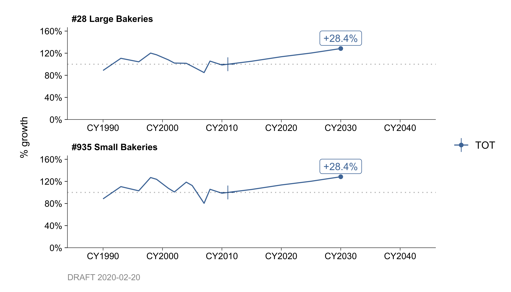
Emissions projections to 2030 were also based on ABAG’s 2009 Manufacturing and Wholesale Employment growth profile.
Control
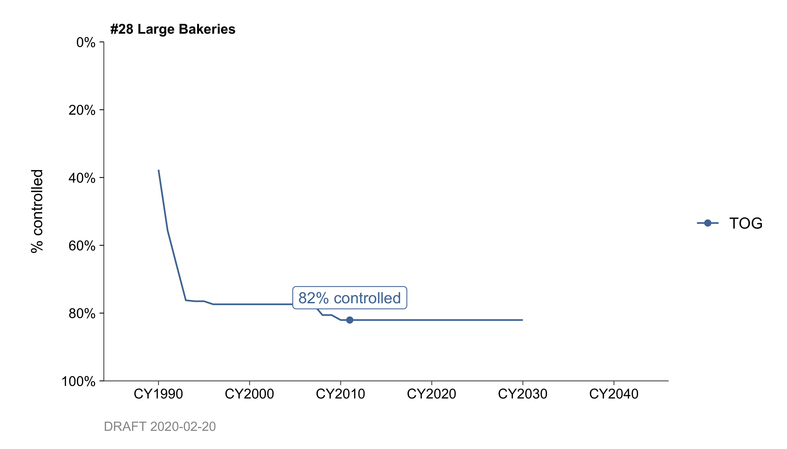
District Regulation 8, Rule 42 was amended requiring control equipment for existing ovens, which commenced operation prior to January 1989. This became effective beginning January 1992. Currently, there is an estimated 82% overall control (for large bakeries) on TOG emissions because of this rule.
By: Stuart Schultz Date: October 2013 Base Year 2011
4.2 Cooking, Charbroiling, Deep Fat Frying, and Unspecified (Griddles)
4.2.1 Emissions
Introduction
This category includes particulate and volatile organic compound (VOC) emissions from the preparation of food for human consumption at eating establishments. Carbon dioxide (CO2), a greenhouse gas, is also emitted from cooking process in these three categories. Restaurant equipment that contributes to these emissions includes charbroilers (Category 29), deep fat fryers (Category 1710) and griddles (Category 1711). Charbroilers can either be conveyorized or under-fire; both types generally use natural gas, however, under-fire charbroilers may use solid fuels, such as charcoal or wood. Deep-fat fryers may be either gas-fired or electric to heat the cooking oil used to cook the food. Griddles use an exposed metal plate, heated by either gas or electricity, to cook the food.
These categories do not include the products of combustion emissions from fuel usage (i.e. natural gas or solid fuels) at these establishments. Those emissions can be found in Categories 307, 1590, or 312.
Methodology
The District estimated the number of restaurants in operation in the Bay Area with assistance from each county’s health department. Each county health department provided the number of restaurants permitted within their jurisdiction. The District refined the number of restaurants by eliminating the ones not open to the public, gone out of business, or those that are less likely to cook, such as delicatessens and ice cream parlors.
The District used a 1997 South Coast Air Quality Management District (SCAQMD) report, “Staff Recommendations Regarding Controlling Emissions from Restaurant Operations”, to estimate the number of charbroilers, deep fat fryers, and griddles used in the Bay Area. The SCAQMD report surveyed the type of equipment that was used in restaurant cooking operations in their district boundaries. This report found approximately 33% of the restaurants operates under-fired charbroilers, 4% operate chain-driven charbroilers, 62% operate deep fat fryers, and 52% operate griddles.
The average amount of food cooked on each type of appliance was developed for the California Air Resources Board by the Public Research Institute. Emission factors, developed by the University of California at Riverside and the University of Minnesota, were used to quantify the emissions each type of food cooked on charbroilers, deep fat fryers, and griddles. Total District throughputs for each type of food for each device were calculated by multiplying the amount of food cooked by the number of restaurants with that particular cooking device. Emissions were calculated by multiplying the emission factor by the throughput.
The total organic gas (TOG) emitted from these three categories is considered all reactive (i.e. TOG equals ROG). The PM emissions emitted from these three categories are particulate matter less than 10 microns in size (PM10) since it is assumed all particles larger than 10 microns are captured before the outside exhaust. A portion of these PM10 emissions are in the form of condensable vapors. Condensable are vapors in the gaseous form at entry into the ventilation hood, but may condense into particulate form (i.e. liquid or solid state) in the duct works, as it exits the exhaust fan, or in the atmosphere. At the time of this writing, condensable PM is not included in the particulate calculations for these categories.
Monthly Variation
Monthly distribution was estimated based on seasonal variation of each establishment, which is a higher sale during summer months due to longer daylight hours and warmer weather.
County Distribution
The number of eating establishments in each county was based on data provided by each of the Bay Area’s county health department. The District refined these numbers of restaurants by eliminating the ones not open to the public, gone out of business, or those that were less likely to cook.
4.2.2 Trends
History
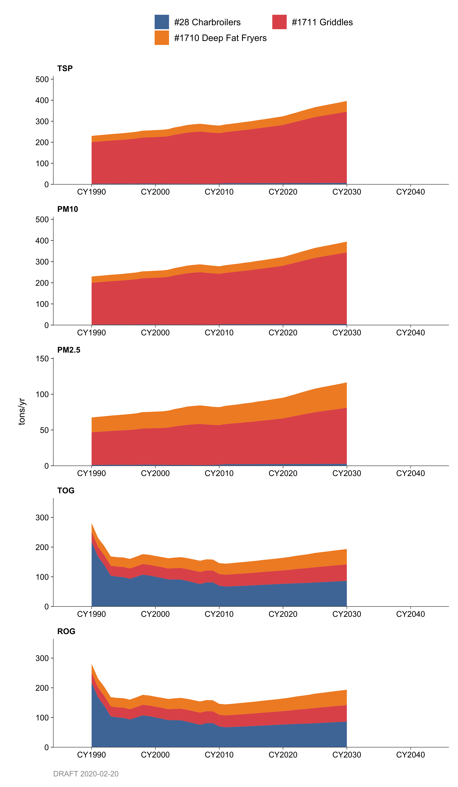
Emissions back to 1996 were estimated based on historical number of eating establishments in the Bay Area as reported in the “Taxable Sales in California (Sales & Use Tax) publications. Prior to 1996 the emissions were based on ABAG’s 2009 Total Population growth profile.
Growth
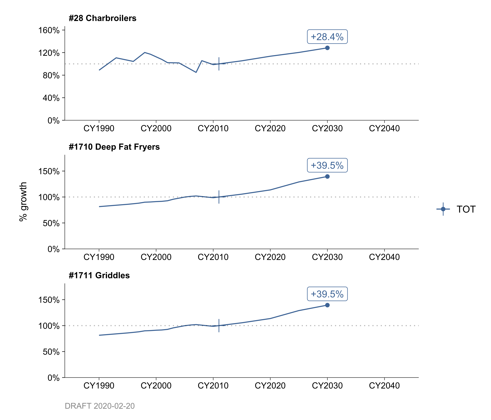
Projections to year 2030 were based on ABAG’s 2009 Total Population growth profile.
Control
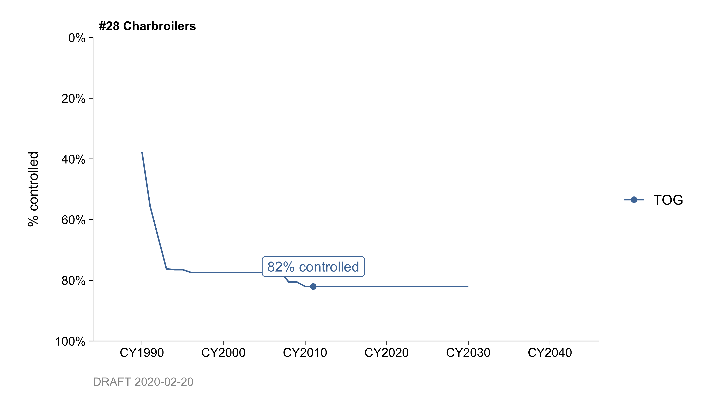
On December 5, 2007, the District adopted Regulation 6, Rule 2, Commercial Cooking Equipment, to reduce particulate and VOC emissions from commercial cooking equipment. Effective January 1, 2009, chain-driven charbroilers that cook at least 400 pounds of beef per week are required to operate with a certified catalytic oxidizer to control emissions of both PM and VOC. Effective January 1, 2010, any newly installed under-fired charbroiler that has a grill surface area of at least 10 square feet and cooks at least 800 pounds of beef per week will be required to install a control device to reduce PM10 emissions to no more than 1 pound of PM10 per 1000 pounds of beef cooked. . Effective January 1, 2013, any existing restaurant having an under-fired charbroiler that has a grill surface area of at least 10 square feet and cooks at least 800 pounds of beef per week will be required to install a control device to reduce PM10 emissions by the same amount. These charbroilers (chain-driven and under-fired) must also be registered through the District
By: Stuart Schultz Date: January 2014 Base Year 2011
4.3 Wineries/Breweries - Fermentation
4.3.1 Emissions
Introduction
This category accounts for the ethanol emissions resulting from the fermentation of grapes at wineries located in the Bay Area. During the fermentation process, sugar in the grape juice reacts with yeast to form ethanol (alcohol) and carbon dioxide (CO2) gas. Ethanol is emitted into the atmosphere through evaporation. The amount of ethanol formation is dependent on tank design, length of fermentation period, fermentation temperature, and volume and sugar content of fermenting juice. Sugar content is measured as degrees Brix (grams sugar/100 ml. juice).
Methodology
Wine production in the Bay Area was estimated based on ARB’s methodology and Wine Institute‘s Grape Crush report. Ethanol emission factors from the two types of wine (White and Red) were derived by the ARB from a computer model developed by Williams and Boulton. The ethanol emission factors per thousand gallons of wine produced for white wine, rose wine, and red wine are listed below:
- White wine: 2.5 lbs.
- Rose and Red wine: 6.2 lbs.
Using an estimated production of wine as: 41.5% white and 58.5% red wine, a composite emission factor of 4.7 lbs. per thousand gallon of wine produced was derived.
The carbon dioxide (CO2) emission factor was derived from the chemical equation.
\[ C_{6}H_{12}O_{6} + \text{yeast} \rightarrow 2\ C_{2}H_{5}OH + 2\ CO_{2} \]
Assume that fifty percent of CO2 emissions escaped to atmosphere during fermentation process, the CO2 emission factor of 157.41 lbs. per thousands of gallons of wine was estimated. District’s Regulations 3, adopted on May 21, 2008, defined the carbon dioxide (CO2) emissions from wine fermentation processes was biogenic carbon dioxide emissions.
The total emissions for this category are determined by multiplying the emission factor and the wine production. This methodology is presently based on ARB’s methodology (Section 5.1).
Emissions from point sources are calculated from operating data (throughput, emission factors, control factors, if any, etc.) submitted for each equipment as part of the permit process. This operating data is updated upon renewal of the permit.
Monthly Variation
The ethanol emissions associated with wine fermentation occurs during the grape crushing season, which generally runs from mid-August through October.
County Distribution
County distribution was based on the amount of wine production in each county. Alameda, Contra Costa, Napa, Santa Clara, Solano, and Sonoma Counties were assumed to produce wine.
4.3.2 Trends
History
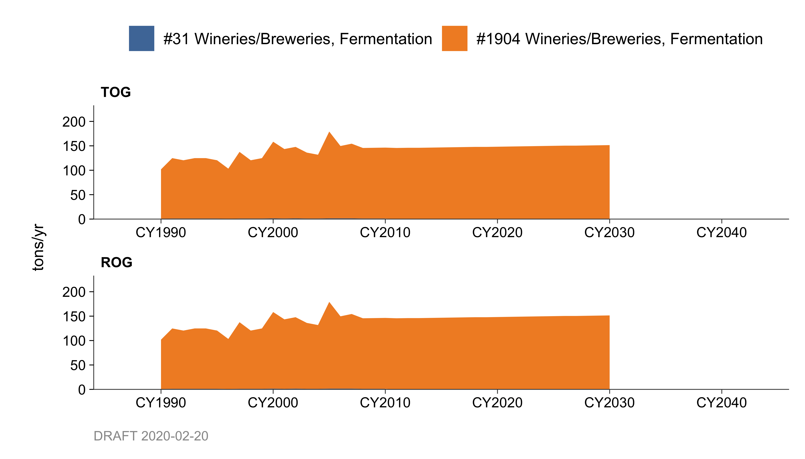
Prior to Base Year 2005, the throughput had been obtained from the “Final Grape Crush Report” published by the California Department of Food and Agriculture. Although phylloxera bugs attack vine rootstock, the wine production in vineyards increased at moderate rate in 1996. ARB revised Winery methodology in September 2004 to reflect current wine production in California. The historical throughput data between 2004 and 2010 were obtained from the Wine Institute located in San Francisco
Growth
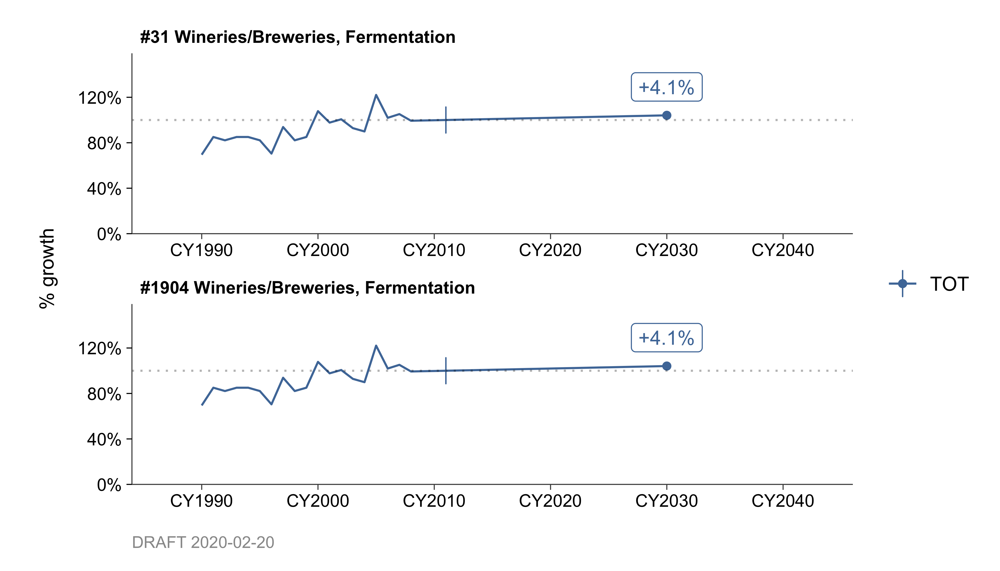
Past and future projection of emissions was based on the food manufacturing industries taken from ABAG’s 2009 Projections report.
By: Michael Nguyen Date: January, 2014 Base Year 2011
4.4 Wineries/Breweries - Aging
4.4.1 Emissions
Introduction
This category consists of both area and point sources. The area source accounts for the ethanol emissions from aging of brandy. Brandy is produced from a distillation process, separating ethanol and other volatile substances from fermented juices. The brandy is then aged for a period of two to ten years. During the aging process, usually, in 50-gallon oak barrels, there is a considerable amount of ethanol emissions released from the barrels into the atmosphere. The point source portion accounts for organic emissions from brewery sources contained in the District’s Data Bank.
Methodology
San Joaquin Valley District estimated 4,561,546 gallons of brandy in 2007. The 57,380 barrels of Brandy in Bay Area were estimated based upon the above reported data.
An emission factor for a 50-gallon Brandy barrel was derived by the Wine Institute. The assumption being: brandy is 120 proof (60% alcohol) on the average; and alcohol is lost during aging at a rate of 2.5% per year per barrel. This resulted in an emission factor of 4.96 lbs. ethanol per barrel of Brandy.
Emissions calculations from the aging of brandy consist of multiplying the emission factor with the amount of brandy barrels in storage in the District. The methodology is presently based on ARB’s methodology (Section 5-2).
Monthly Variation
Brandy is aged for a period of years, during which emissions are released 365 days per year and 24 hours per day.
County Distribution
County distribution is based on the number of 50-gallon brandy barrels in each county. Napa, Santa Clara, Solano, and Sonoma counties are assumed to produce or to store the 50-gallon brandy barrels.
4.4.2 Trends
History
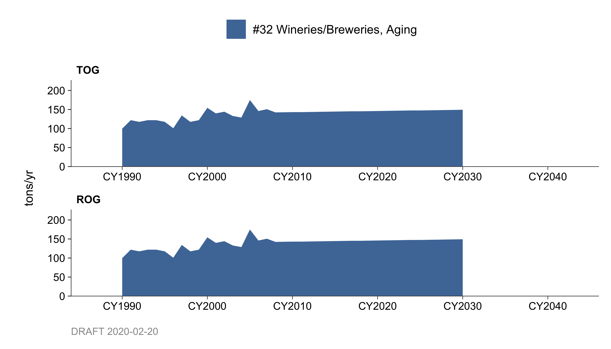
From 1980 to 1987, estimated emissions were based on the summary report of the number of alcoholic production facilities in California published by U.S. Department of Census. The number of alcoholic production facilities had been reduced in Santa Clara County due to increasing new electronic manufacturers and housing development. However, grape production has increased since 1988; therefore, emissions were estimated to be at constant level during 1988-1990. In 1993, grape crush was down approximately 7 % from the 1992 crush, and 7 % less than the record-large 1982 crush of 3,115,531 tons. Emissions from 1993 to 1998 are assumed to be constant at the 1993 production level.
Growth
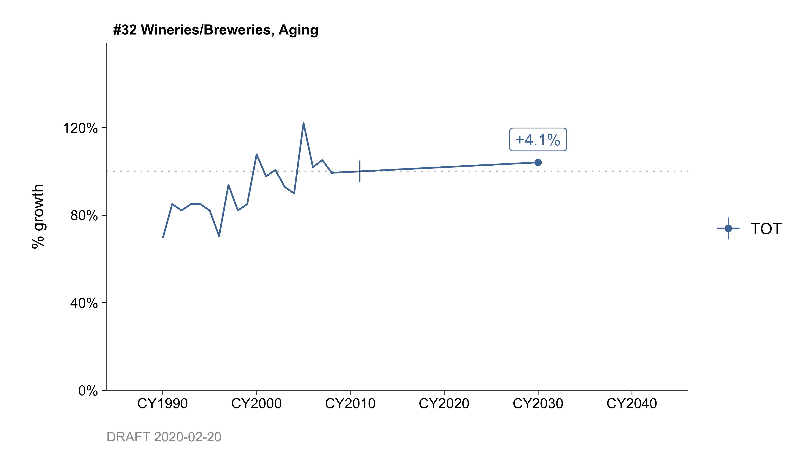
Future projection of emissions was based on the food manufacturing industries taken from ABAG’s 2009 Projections report.
By: Michael Nguyen Date: January, 2014 Base Year 2011
4.5 Other Food & Agricultural Processing
4.5.1 Emissions
Introduction
The category includes emissions from processing plants of miscellaneous food and agricultural products for human or animal consumption such as: coffee and cocoa bean roasting; grain feed milling/packaging; spice/flavoring handling; sugar refinery; onion, garlic, corn, and pet food processing.
Methodology
This category consists only of point sources that are contained in the District Data Bank system. Individual companies report information on plant equipment, operating data, and source throughput. This information is updated upon permit renewal in the District’s Data Bank. Criteria pollutant emissions calculated by using throughput data of the specific materials, emission factors based on various test data and publications, operating times, batch cycle variables, and control equipment reduction factors.
Carbon dioxide (CO2) emissions are produced during the fermentation process of beer production and in the combustion of organic emissions from coffee and cocoa beans in abatement devices, such as an afterburner. The CO2 emissions emitted from beer production is considered biogenic.
Monthly Variation
Monthly distribution was estimated to be the same throughout the year due to the variety of processing facilities.
County Distribution
The county location of each company as reported in the Data Bank is used to distribute emissions into each county.
4.5.2 Trends
History
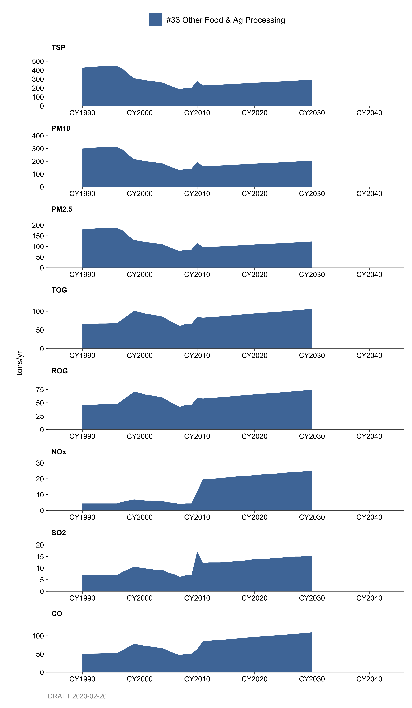
The historical growth profile was based on a combination of prior emissions data (back to 1987) and the Association of Bay Area Government’s (ABAG’s) 2009 Manufacturing & Wholesale Employment data.
Growth
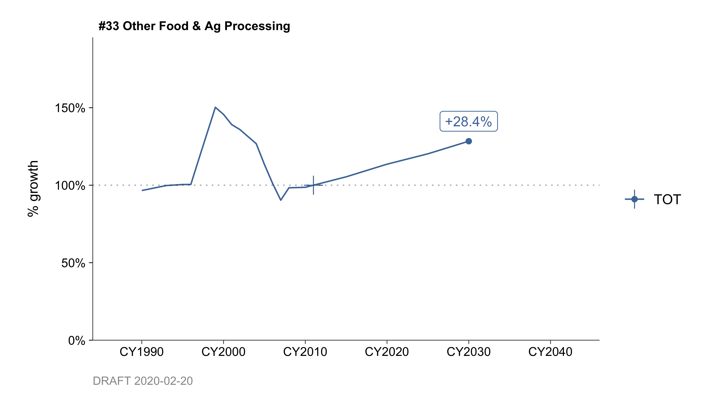
Projections of emissions to 2030 were based on ABAG’s 2009 Manufacturing & Wholesale Employment data.
Control
Emissions through the years were estimated by using agricultural production data in the District. In 1963-1964 there was at least 50% reduction of particulate emissions from equipment such as coffee roaster and food dryers brought about by the District’s Regulation 6 on visible emissions from the Ringlemann 2 standard. In 1970 there was at least an additional 25% reduction in particulates from the Ringlemann 1 standard. Currently, there is an estimated 98% overall control of particulates from this category.
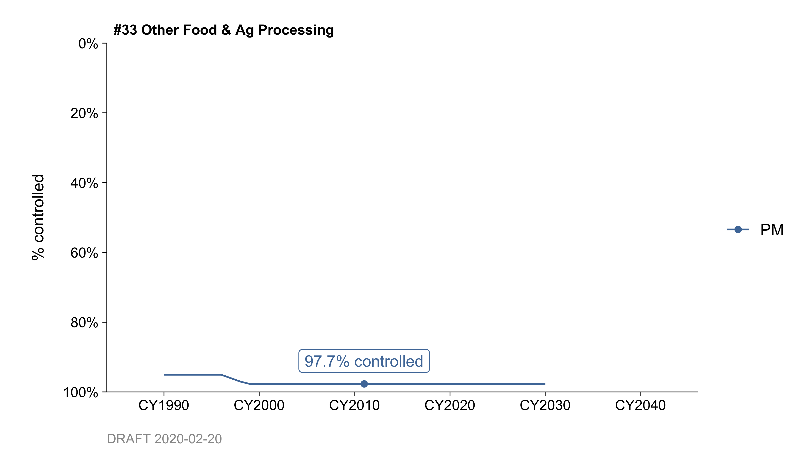
Emissions through the years were estimated by using agricultural production data in the District. In 1963-1964 there was at least 50% reduction of particulate emissions from equipment such as coffee roaster and food dryers brought about by the District’s Regulation 6 on visible emissions from the Ringlemann 2 standard. In 1970 there was at least an additional 25% reduction in particulates from the Ringlemann 1 standard. Currently, there is an estimated 98% overall control of particulates from this category.
By: Stuart Schultz Date: October 2013 Base Year 2011
4.6 Metallurgical, Foundry & Forging Operations, Fugitive, Metal Recycling & Shredding Operations, Metal Recycling & Shredding Operations, Fugitive
- Metallurgical (Incl. Foundry & Forging Operations) (34)
- Foundry & Forging Operations, Fugitive (2221)
- Metal Recycling & Shredding Operations (2222)
- Metal Recycling & Shredding Operations, Fugitive (2223)
4.6.1 Emissions
Introduction
Foundries, forging operations, and metal recycling and shredding operations are sources of particulate matter (PM) emissions, some of which may be listed as toxic air contaminants, and total organic compounds (TOG), some of which may also be odorous compounds. Foundries and forges process ferrous (iron based) metals, non-ferrous (i.e. aluminum, copper, magnesium, zinc, brass, and bronze), or a combination of both. Metal recycling and shredding facilities collect, sort, and recycle scrap metal. Scrap Metal includes both ferrous and non-ferrous metals and is often shredded.
Point sources (Categories 34 and 2222) include various process equipment associated with the foundry, forging and metal recycling and shredding operations. These equipment include furnaces (cupola, electric arc, reverberatory, etc.), temporary mold and core making, metal casting, cooling, shakeout, and sand reclamation, shredders, etc. These equipment are subject to District regulations and the permit system. However, there may be some exempt sources for which permits are not required that are also considered point sources. Emissions associated with these two categories are PM and TOG.
In addition to point sources, various other processes and emission sources at these facilities, such as tapping pouring and casting, cooling, shakeout, metal management, sorting separation, open spaces, etc. are the primary sources of fugitive emissions. The fugitive PM emissions from these processes and sources are considered area sources (Categories 2221 and 2223).
Methodology
Categories 34 and 2222 contain PM and TOG emissions from point sources only. These point source emissions are calculated from operating data submitted for each equipment as part of the permit approval process. Parameters and variables include throughput, emission factors, operating times, batch cycle variables, and stack parameters. For control equipment, the weight percent reduction factors for each pollutant account for emission reduction. Throughput is updated upon permit renewal. The PM and TOG emissions for the point sources are contained in the permit data bank and the summation of these emissions provide the emissions for these categories.
Categories 2221 and 2223 contain PM emissions from area sources. Fugitive PM emissions from Category 2221 were estimated using a BAAQMD engineering analysis of PM emission at four of the larger foundries and forges within the District The fugitive PM emissions at three of these facilities were estimated to be between 60% - 85% of the total (fugitive and abated) PM emissions. The fugitive PM emission at other facility, though small, was estimated from its recycling activity. The fugitive emissions and throughput from these facilities were used to estimate an emission factor. This emission factor along with reported throughputs from the smaller foundries and forging facilities within the District provided fugitive PM emissions from these sources. In 2011, the fugitive PM emission from Category 2221 was estimated to be 0.61 ton/day.
District staff used an engineering analysis of fugitive PM emissions from a recent CEQA analysis conducted for a new facility in West Sacramento, California to estimate fugitive PM emissions from Bay Area scrap metal recycling facilities (Category 2223). In 2011, the fugitive PM emission from Category 2223 was estimated to be 0.12 ton/day.
Monthly Variation
Monthly variation of emissions for these categories is assumed to be uniform (i.e. does not vary) throughout the year.
County Distribution
For point and area sources, information on the location of each facility was known and the emissions were distributed to the counties accordingly.
4.6.2 Trends
History
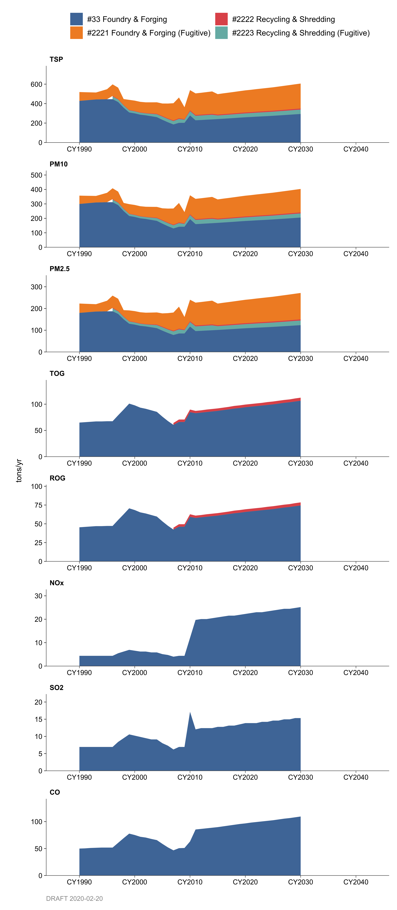
The historical growth profiles were based on a combination of prior emissions data and the Association of Bay Area Government’s (ABAG’s) 2009 Manufacturing Employment growth profile.
Growth
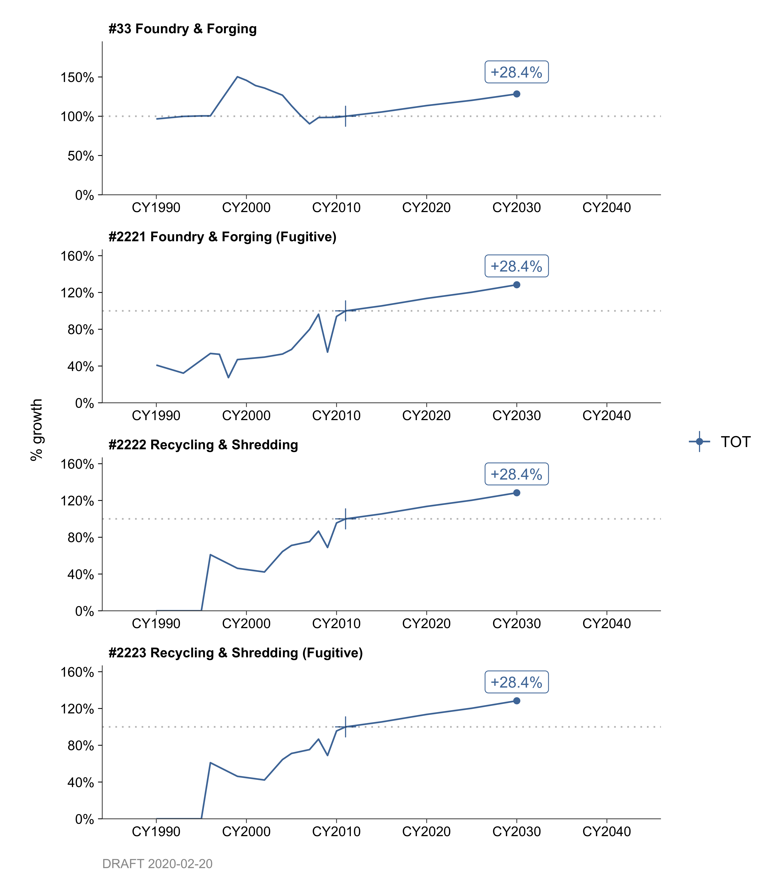
Projections of emissions to 2030 were based on ABAG’s 2009 Manufacturing & Wholesale Employment growth profile.
Control
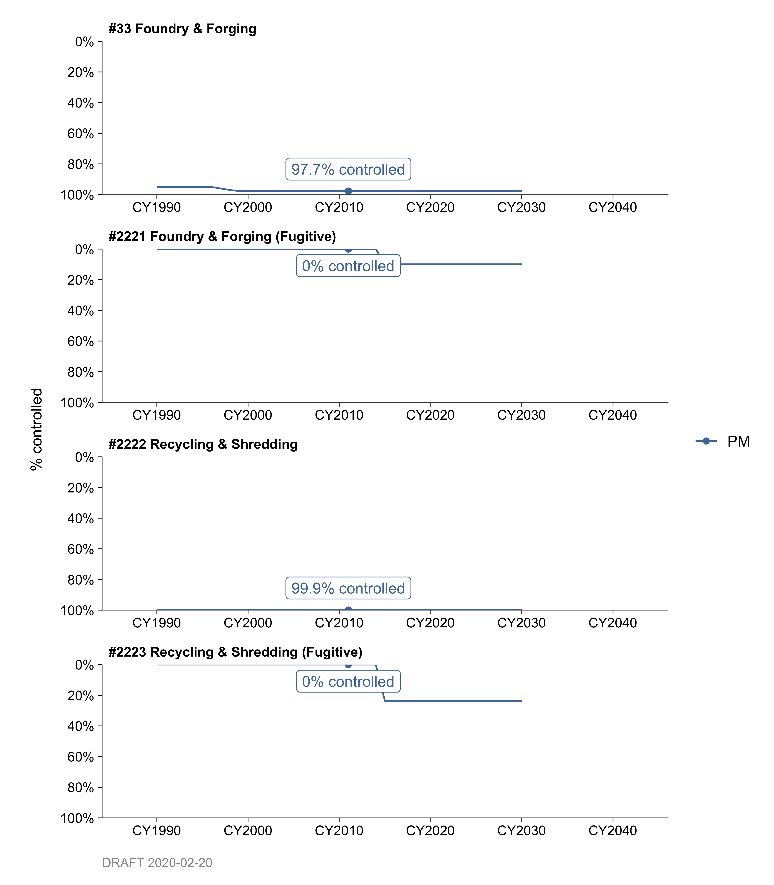
In 1963-1970, the particulate emissions were reduced due to the control imposed by Ringlemann requirements from Regulation 6. Currently, there is an estimated 98.5% overall control of particulates from Category 34 and over 99% for Category 2222.
On May 1, 2013, Regulation 12, Rule 13 (Miscellaneous Standards of Performance, Foundry and Forging Operations) was passed. For Category 34, organics will be reduced by approximately 42%, beginning May 1, 2015. For Category 2221, this rule will reduce fugitive particulate emissions by approximately 10% through an Emission Minimization Plan, beginning May 1, 2015.
On May 1, 2013, Regulation 6, Rule 4 (Metal recycling and Shredding Operations) was passed. For Category 2223, this rule will reduce fugitive particulate emissions by approximately 24% through an Emission Minimization Plan, beginning May 1, 2015.
By: Stuart Schultz Date: February 2014 Base Year 2011
4.7 Wood Products Manufacturing
4.7.1 Emissions
Introduction
Emissions from this category include generation of small wood waste particles (sawdust) from woodworking operations such as sawing, planing, lathing, and sanding. Industries engaged on these operations include manufacturers of plywood, particleboard, hard board, and furniture.
Methodology
This category contains emissions from both point (Category 35) and area sources (Category 1907). Wood waste generated as particulate matter is removed from the wood working operations mainly for housekeeping purposes, by either a cyclone or a baghouse. The Data Bank contains throughput information submitted by individual plant by sources. Emissions are then calculated by using specific emission factors for a particular source operation supplied by the company. The point sources account for the majority of emissions from this category.
It was estimated that area sources account for 20% of the total throughput from this category. The area source total particulate emission factor was assumed to be 20 pounds/ton wood processed. Area source particulate emissions were calculated by multiplying the throughput by its emission factor.
4.7.1.1 Monthly Variation
The emissions over the 12 months were estimated based on the throughput data from each plant.
4.7.1.2 County Distribution
Emissions are distributed to the counties based on the location of the processing plant. The District’s data bank contains the information on plant location.
4.7.2 Trends
History
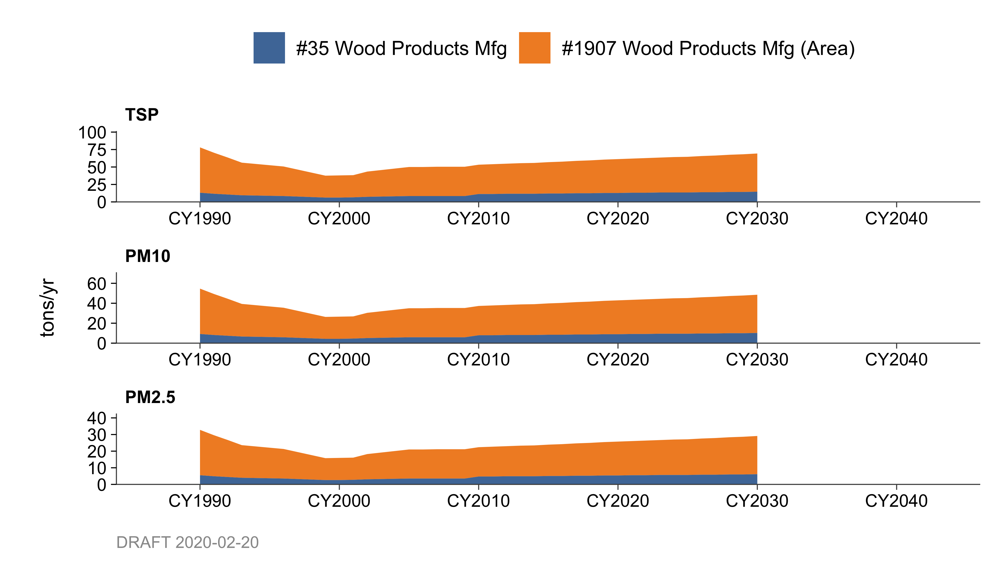
The historical growth profile was based on a combination of prior permit data (back to 1990) and the Association of Bay Area Government’s (ABAG’s) 2009 Manufacturing Employment growth profile.
Growth
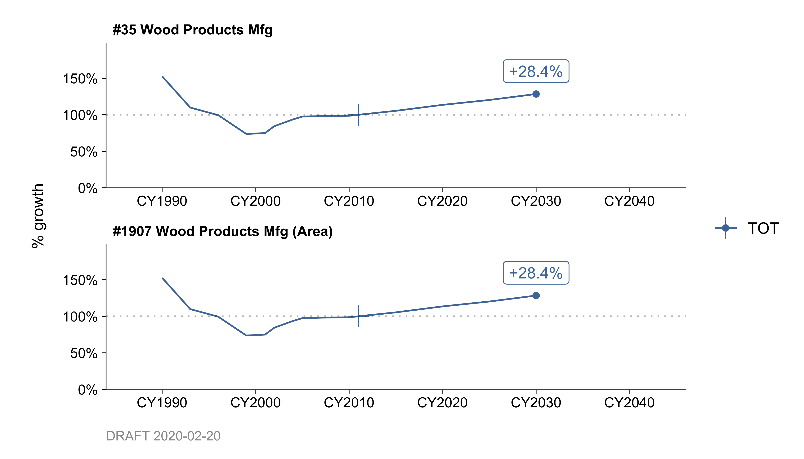
Projections of emissions to 2030 were based on ABAG’s 2009 Manufacturing and Wholesale Employment growth profile.
By: Stuart Schultz Date: November 2013 Base Year 2011
4.8 Cement Manufacturing & Combustion
4.8.1 Emissions
Introduction
The primary criteria pollutant emission from cement manufacturing is particulate matter. Particulate matter at cement plants are generated during quarrying, crushing, grinding, blending, drying, transfer process, and storage of cement. The largest single source of emissions is the kiln. The cement industry generally uses mechanical collectors, electric precipitators, or baghouses to control emissions. The most desirable method of disposing of the dust collected by an emission control system is injection into kiln burning zone for inclusion in the clinker.
Various fuels are used in the kiln for the cement manufacturing process. These fuels have included coke, coal, and natural gas. (As of 2010, coal was no longer as a fuel in the kiln.) Diesel fuel is used in the emergency generators and portable compressors. The emissions from these fuels are the five criteria pollutants, namely PM, organics, NOx, SOx, and CO.
Carbon Dioxide (CO2), a greenhouse gas (GHG), is also produced during the cement manufacturing process. Carbon Dioxide (CO2), methane (CH4), and nitrous oxide (N2O) are the GHG’s emitted during the combustion of the fuels.
Methodology
These categories contain criteria pollutant and GHG emissions from point sources only. Emissions were individually calculated for each source operation in the District’s Data Bank System. Emissions are calculated by multiplying the specific emission factor for a particular source operation by the throughput. These data are supplied by the permitted facility. The summation of these emissions provides the emissions for these categories.
The CO2 emission factor used in the cement manufacturing process was obtained from the California Climate Action Registry’s Cement reporting Protocol. The combustion sources (coke, natural gas. and diesel) GHG emission factors for CO2, CH4, and N2O were obtained from the Department of Energy (EIA) and the California Energy Commission (CEC).
Monthly Variation
Monthly and daily production rates follow permitted data supplied by the major cement manufacturer.
County Distribution
Emissions are distributed to the county based on the location of the processing plant. The District’s data bank contains the information on plant location in Santa Clara County
4.8.2 Trends
History
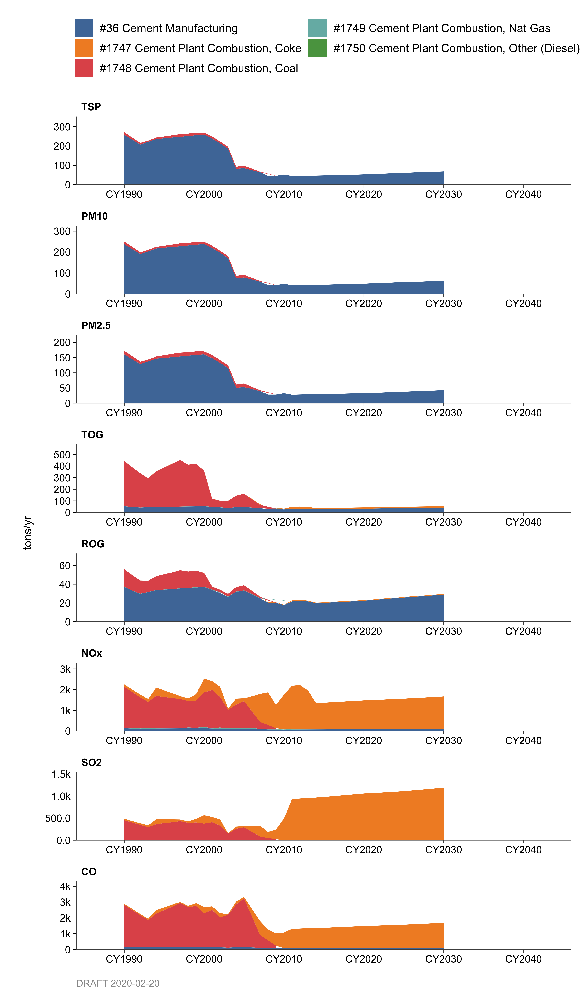
The historical growth profile for Category 36 was based on a combination of prior cement kiln throughput data (back to 1987) and the Association of Bay Area Government’s (ABAG’s) 2009 Construction Employment growth profile. The historical growth profile for Categories 1747 - 1750 was based on a combination of prior fuel throughput data (back to 1999) and the Association of Bay Area Government’s (ABAG’s) 2009 Construction Employment growth profile.
Growth
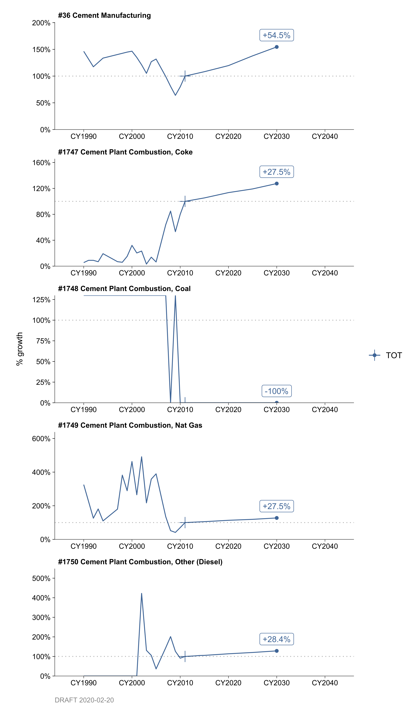
Projections of emissions to 2030 in all categories were based on ABAG’s 2009 Construction Employment growth profile.
Control
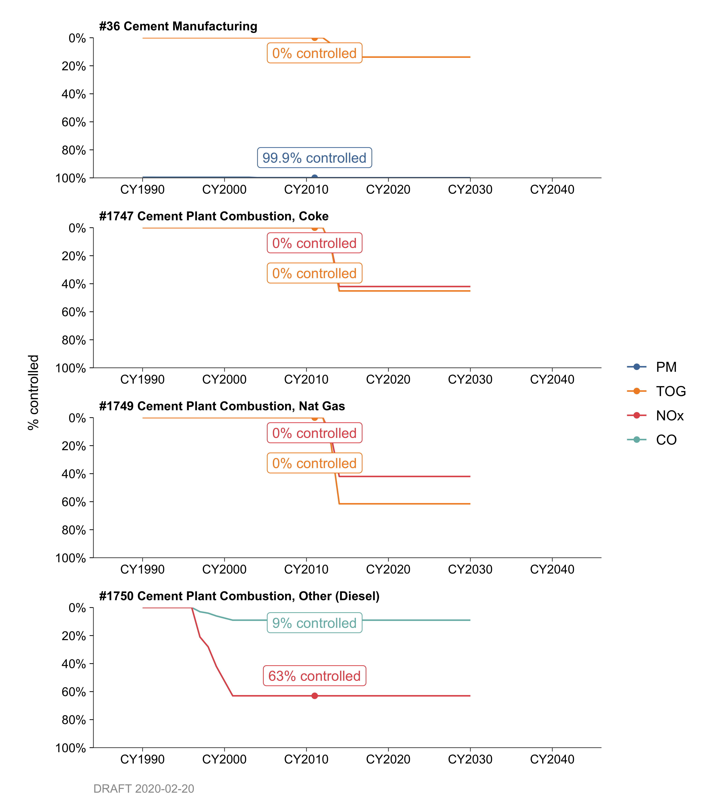
Two federal rules address air emissions from Portland cement manufacturing, namely New Source Performance Standards (NSPS) and National Emission Standard for Hazardous Air Pollutants (NESHAPS). For specific industrial operations (such as cement manufacturing), EPA addresses criteria pollutants from new, modified and reconstructed sources through NSPS. NESHAP address emissions of hazardous air pollutants from both new and existing sources.
The cement manufacturing operations are subject to District regulations regarding permitting (Regulations 2-1 and 2-2), emissions of toxic or hazardous compounds (Regulation 2-5) and some regulations for individual pollutants. For example, Regulation 6-1 reduces particulate emissions from the control imposed by Ringleman requirements.
The District adopted Regulation 9, Rule 13, Nitrogen Oxide, Particulate Matter, and Toxic Air Contaminants from Portland Cement Manufacturing, on September 17, 2012.
This rule becomes effective on September 9, 2013 and limits the emissions of NOx, PM, and toxic air contaminants. The categories criteria pollutant’s overall control efficiencies (CE) as a result of this rule are listed below:
For Category 36, the overall CE of PM increases slightly, to over 99%.; the overall CE of organics is approximately 14%.
For Category 1747, the overall CE of NOx is 42%; the overall CE of organics is approximately 45%.
For Category 1749, the overall CE of NOx is 42%; the overall CE of organics is approximately 62%.
By: Stuart Schultz Date: September 2013 Base Year 2011
4.9 Contaminated Soil Aeration
4.9.1 Emissions
Introduction
Category 37 accounts for organic emissions from contaminated soil aeration events. Contaminated soil aeration occurs when soil containing organic compounds is excavated and allowed to vent into the open air. These events include underground gasoline tank removal, soil excavation during pipeline leak repairs, and removal of other organic and petroleum chemical spills.
Methodology
The District requires a written report for any soil aeration activity. These reports were evaluated to determine a generalized emission factor for each event as well as to estimate the total number of excavations.
Regulation 8, Rule 40 allows up to 150 pounds per day of organic compound emissions per aeration event. The organic compound emissions factor was calculated assuming the aeration site starts emitting at 120 pounds per day, with emissions halving every ten days, and with emissions set at zero at the 90th day. Two tank removals or replacements are also assumed to occur per aeration event. On average, about 250 excavation events take place annually in the Bay Area.
County Distribution
The county activity distribution is based on an average number of aeration events in each county in the District.
Monthly Variation
The monthly factors are assumed to be uniform. More aeration events are assumed to start during weekdays than during weekends.
4.9.2 Trends
History
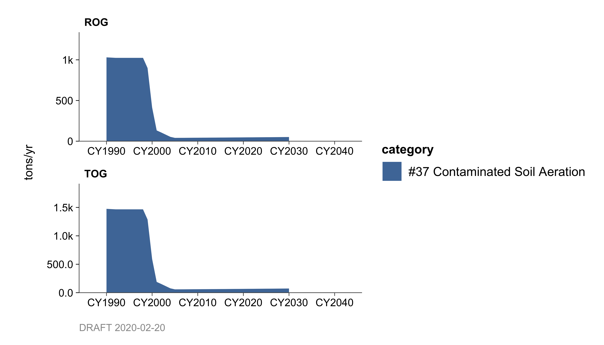
State regulations governing the construction standards of gasoline holding tanks required many stations to replace their existing tanks. In our Source Inventory of 1987, the District had 152 excavation events reported. In 1990, this number had grown to 1254. The number of excavations remained above 1100 per year through the mid 1990s.
Growth
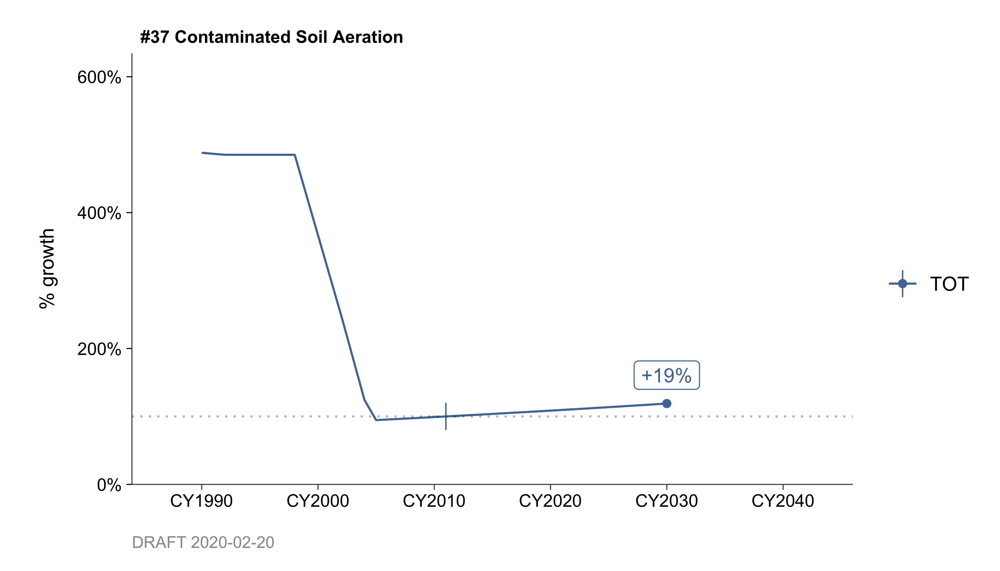
Much of the increase since 1987 had been due to the Porter and Cologne Act regulated by the State Water Resources Control Board and California Regional Water Quality Control Boards. Parts of these underground tank regulations govern the replacement of underground storage tanks.
The California Code of Regulations, Title 23, Division 3, Chapter 16 stated that by December 22, 1998, all underground storage tanks containing hazardous substances, other than those containing motor vehicle fuels, need to be retrofitted with secondary containment. By the same date, motor vehicle fuel tanks made of steel needed to be retrofitted with secondary containment or be provided with both interior lining and exterior cathodic protection.
The number of excavation events remained at close to the 1990 rate through 1998 and declined afterwards.
Control
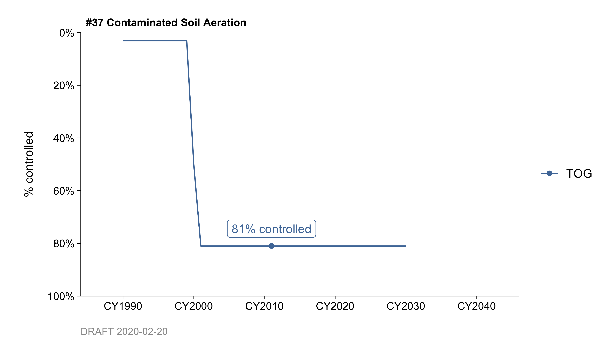
The District adopted Regulation 8, Rule 40 on February 15, 1989. The overall control afforded by this rule is 81%. This rule applies for soil aeration events only. Air stripping and soil excavation events are inventoried in category 937, under Regulation 8, Rule 47.
Rule 40 sets the rate of uncontrolled aeration in addition to describing an acceptable soil aeration procedure. For an uncontrolled aeration, an operator may not aerate the soil at above certain rate per day; however, the soil aeration may be extended over many days. This does not reduce the total emissions from an aeration event.
By: Sukarn Claire Date: January 2014 Base Year: 2011
4.10 Air Stripping and Soil Vapor Extraction
4.10.1 Emissions
Introduction
This category accounts for the emissions from air stripping and soil vapor extraction processes. Soil and groundwater contamination are the result of leaking underground storage tanks, accidental spills and landfill leachate. Air stripping process is commonly used for contaminated groundwater remediation. Contaminated groundwater is pumped into the air-stripping tower. A blower generally exhausts the effluent air stream from the stripping column. The contaminated air stream is routed to an air pollution control device (i.e., carbon adsorbers). Soil vapor extraction is one of the techniques to extract volatile organic compounds (VOC) from contaminated soil through the use of a vacuum system. Fresh air is injected into the subsurface at locations around the contaminated area. The contaminated air is withdrawn under vacuum from extraction wells. This contaminated air is then vented directly to a VOC treatment system such as carbon adsorbers, thermal incinerators, catalytic incinerators, and condensers prior to being released to the atmosphere.
Methodology
This category contains emissions from point sources only. Point source emissions are calculated from each equipment’s operating data submitted as part of the permit approval process. The Data Bank contains throughput information submitted by individual plants by sources. Emissions are then calculated by using specific emission factors for a particular source operation supplied by the company. If no specific factor is available, a generalized factor developed by district staff engineer is used to determine emissions.
Monthly Variation
The data bank contains percentage of throughput data for each of the four 3-month seasonal periods: (December - February, March - May, June - August, September - November).
County Distribution
The data bank system contains information on the county location of each processing plant; hence, emissions are distributed to the counties accordingly.
4.10.2 Trends
History
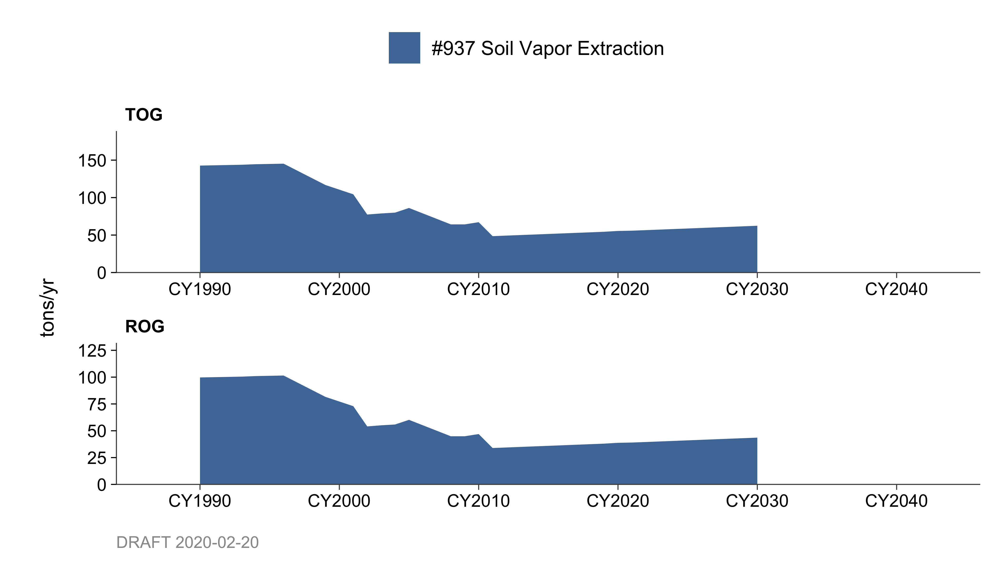
The historical growth profile was based on a combination of prior emissions data (back to 1996) and the Association of Bay Area Government’s (ABAG’s) 2009 Manufacturing Employment growth profile.
Growth
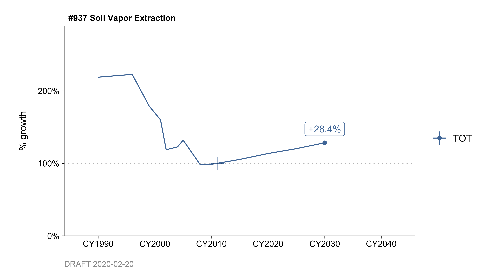
Future projections of emissions to 2030 are based on ABAG’s 2009 Manufacturing Employment growth profile.
Control
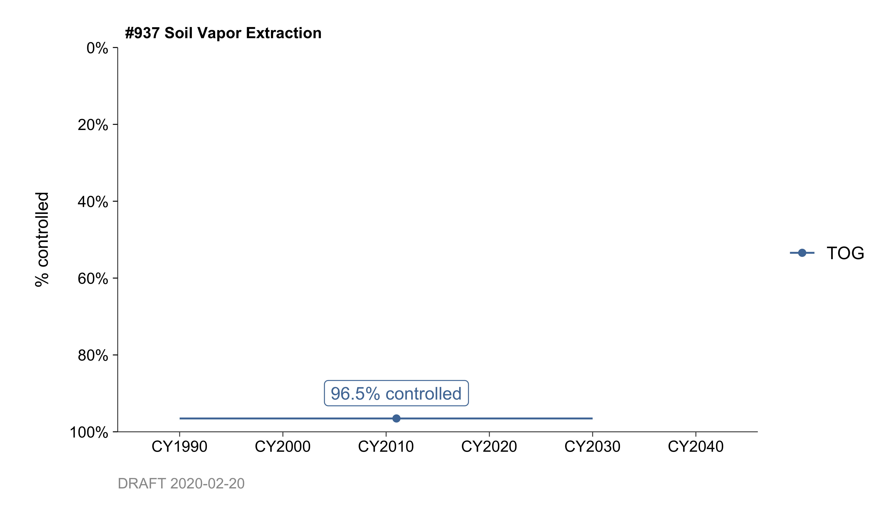
The District adopted Regulation 8, Rule 47 on December 20, 1989. This rule requires all facilities to control emissions by at least 90%; however, based on emissions data, the overall control efficiency is estimated at 96%.
By: Stuart Schultz Date: November 2013 Base Year 2011
4.11 Asphaltic Concrete Plants
TODO
4.12 Concrete Batching
TODO
4.14 Stone, Sand, and Gravel
TODO
4.15 Sand Blasting
TODO
4.16 Semiconductor Manufacturing
TODO
4.17 Flexible & Rigid Discs Manufacturing
TODO
4.18 Fiberglass Manufacturing
TODO
4.19 Rubber Manufacturing
TODO
4.20 Plastic Products Manufacturing
TODO
4.21 Oil Production Fields
TODO
4.22 Gas Production Fields
TODO
4.23 Other Miscellaneous Industrial/Commercial
TODO